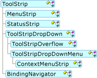
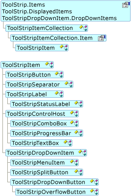

Архитектура элемента управления ToolStrip
ToolStrip И ToolStripItem классы предоставляют гибкую, расширяемую систему для отображения элементов панели инструментов, состояния и меню. Все эти классы содержатся в System.Windows.Forms пространство имен и они обычно именуются с префиксом «ToolStrip» (такие как ToolStripOverflow) или с суффиксом «Лента» (такие как MenuStrip).
ToolStrip
В следующих разделах описываются ToolStrip и элементов управления, которые являются производными от него.
ToolStrip является абстрактным базовым классом для MenuStrip, StatusStrip, и ContextMenuStrip. Следующий объект модели показана ToolStrip иерархии наследования.

Вы можете получить доступ к все элементы в ToolStrip через Items коллекции. Вы можете получить доступ к все элементы в ToolStripDropDownItem через DropDownItems коллекции. В классе, производном от ToolStrip, можно также использовать DisplayedItems свойство для доступа к только элементы, отображаемые в данный момент. Ниже приведены элементы, которые в настоящее время не находятся в меню переполнения.
Следующие элементы специально предназначены для эффективной работы с обоими ToolStripSystemRenderer и ToolStripProfessionalRenderer во всех направлениях. Они доступны по умолчанию во время разработки для ToolStrip управления:
MenuStrip
MenuStrip является контейнером верхнего уровня, которое заменяет MainMenu. Она также предоставляет управления ключами и несколько документов интерфейса (MDI) функции. С функциональной точки зрения ToolStripDropDownItem и ToolStripMenuItem работают вместе с MenuStrip, несмотря на то, что они являются производными от ToolStripItem.
Следующие элементы специально предназначены для эффективной работы с обоими ToolStripSystemRenderer и ToolStripProfessionalRenderer во всех направлениях. Они доступны по умолчанию во время разработки для MenuStrip управления:
StatusStrip
StatusStrip заменяет StatusBar элемента управления. Специальные возможности StatusStrip включают макет пользовательской таблицы, поддержка изменения размера и перемещения захватов, формы и Spring свойство, которое позволяет ToolStripStatusLabel для автоматического заполнения доступного пространства.
Следующие элементы специально предназначены для эффективной работы с обоими ToolStripSystemRenderer и ToolStripProfessionalRenderer во всех направлениях. Они доступны по умолчанию во время разработки для StatusStrip управления:
ContextMenuStrip
ContextMenuStrip заменяет ContextMenu. Можно связать ContextMenuStrip с любым элементом управления и правой кнопкой мыши щелкните автоматически отображает контекстное меню (или контекстное меню). Вы можете отобразить ContextMenuStrip программно с помощью Show метод. ContextMenuStrip поддерживает отменяемого Opening и Closing событий для обработки динамического заполнения и ситуации с несколькими щелчками. ContextMenuStrip поддерживает образы, состояние пометки элемента меню, текст, клавиши доступа, сочетания клавиш и вложенные меню.
Следующие элементы специально предназначены для эффективной работы с обоими ToolStripSystemRenderer и ToolStripProfessionalRenderer во всех направлениях. Они доступны по умолчанию во время разработки для ContextMenuStrip управления:
Функции универсального элемента управления ToolStrip
Ниже описываются возможности и поведение, являющиеся общими для ToolStrip и производных элементов управления.
Рисование
Пользовательская отрисовка можно сделать в ToolStrip элементы управления несколькими способами. Как и для других элементов управления Windows Forms, ToolStrip и ToolStripItem обладают переопределяемыми OnPaint методы и Paint события. Как при обычном рисовании система координат определяется относительно клиентской области элемента управления; левый верхний угол элемента управления является 0, 0. Paint Событий и OnPaint метод ToolStripItem ведут себя как другие события рисования элемента управления.
ToolStrip Элементы управления также предоставляет более подробный доступ к отрисовке элементов и контейнера с помощью ToolStripRenderer класс, обладающий переопределяемые методы рисования фона, фоновый цвет элемента, изображения элемента, стрелки элемента, текста элемента и границу ToolStrip. Аргументы события для этих методов предоставляют ряд свойств, таких как прямоугольники, цвета и текстовых форматов, которые можно настраивать при необходимости.
Чтобы настроить несколько аспектов способ рисования элемента, обычно следует переопределить ToolStripRenderer.
Если вы создаете новый элемент и хотите управлять всеми аспектами заливку, переопределить OnPaint метод. Изнутри OnPaint, можно использовать методы из ToolStripRenderer.
По умолчанию ToolStrip включена двойная буферизация преимуществами OptimizedDoubleBuffer параметр.
Родительские связи
Концепция контейнеров владения и родительские связи более сложен в ToolStrip чем элементы управления других контейнерных элементов управления Windows Forms. Это необходимо для поддержки динамических сценариев, таких как переполнение, совместное использование элементов раскрывающегося списка в нескольких ToolStrip элементов и для поддержки создания ContextMenuStrip из элемента управления.
В следующем списке описаны элементы, связанные с родительской и объясняет их использование.
OwnerItem Получает элемент, который является источником раскрывающегося элемента. Это похоже на SourceControl, но вместо возвращения элемента управления, он возвращает ToolStripItem.
SourceControl Определяет, какой элемент управления является источником объекта ContextMenuStrip при нескольких элементов управления одного и того же ContextMenuStrip.
GetCurrentParent метод доступа только для чтения к Parent свойство. Родительский элемент отличается от владельца, что родительский элемент обозначает возвращаемый текущим ToolStrip в котором отображается элемент, который может быть в области переполнения.
Owner Возвращает ToolStrip коллекция элементов которого содержит текущий ToolStripItem. Это лучший способ ссылаться ImageList или другие свойства верхнего уровня ToolStrip без написания специального кода для обработки переполнения.
Поведение унаследованных элементов управления
Следующие элементы управления заблокированы, каждый раз, когда они используются в наследования:
ToolStripPanel включающий панелей в ToolStripContainer а также отдельные ToolStripPanel элементов управления.
Например можно создайте новое приложение Windows Forms с помощью одного или нескольких элементов управления в списке выше. Задайте модификатор доступа одного или нескольких элементов управления к public или protected, а затем постройте проект. Добавить форму, которая наследуется из первой формы, а затем выберите наследуемого элемента управления. Элемент управления выглядит заблокированным, как в случае его модификатор доступа private.
Поддержка наследования элемента управления ToolStripContainer
ToolStripContainer Элемент управления поддерживает ограниченные сценарии наследования, аналогичный приведенному ниже:
Создайте новое приложение Windows Forms.
Добавьте на форму элемент ToolStripContainer.
Задайте модификатор доступа для ToolStripContainer для
publicилиprotected.Добавлять любые сочетания ToolStrip, MenuStrip, и ContextMenuStrip элементы управления ToolStripPanel областей ToolStripContainer.
Выполните построение проекта.
Добавите форму, которая наследуется из первой формы.
Выберите наследуемого ToolStripContainer в форме.
Унаследованное поведение дочерних элементов управления
После выполнения предыдущих шагов, наследуемых происходит следующее:
В конструкторе элемента управления отображается со значком, унаследованные.
ToolStripPanel Элементы управления заблокированы; нельзя выбрать или изменить порядок их содержимое.
Элементы можно добавить ToolStripContentPanel, переместите элементы управления и сделать их дочерние элементы управления ToolStripContentPanel.
Изменения сохраняются после создания формы.
Note
Удалите модификатор доступа из всех ToolStripPanel элементов управления, которые являются частью ToolStripContainer. Модификатор доступа для ToolStripContainer управляет элемента управления целиком.
Частичное доверие
Ограничения ToolStripразработана при частичном доверии, чтобы предотвратить случайный ввод личных сведений, которые могут быть использованы неавторизованными пользователями или службами. Ниже приведены защитные меры.
ToolStripDropDownэлементы управления требуют AllWindows для отображения элементов в ToolStripControlHost. Это относится к обоих встроенные элементы управления, такие как ToolStripTextBox, ToolStripComboBox, и ToolStripProgressBar как хорошо созданным пользователем элементы управления. Если это требование не удовлетворяется, эти элементы не отображаются. Исключение не возникает.Установка AutoClose свойства
falseне разрешен и поддерживающий отмену Closing событий параметр учитывается. Это делает невозможным введите более одного нажатия клавиш без отключения раскрывающегося элемента. Если это требование не удовлетворяется, такие элементы не отображаются. Исключение не возникает.Многие регистрации нажатия клавиш, обработка событий не будет вызываться, если они встречаются в контексте с частичным доверием, отличных от AllWindows.
Ключи доступа не обрабатываются, если AllWindows не предоставляется.
Использование
Следующие шаблоны использования иметь влияют на ToolStrip макет, взаимодействие с клавиатурой и пользовательское поведение:
Пришел в ToolStripPanel
ToolStrip Может быть перемещен в ToolStripPanel и по горизонтали ToolStripPanels.
DockСвойство игнорируется и если Stretch свойствоfalse, размер ToolStrip увеличивается по мере добавления элементов ToolStripPanel. Как правило ToolStrip не участвует в последовательности табуляции.Закрепленное
ToolStrip Помещается на одной стороне контейнера в фиксированное положение, а его размер увеличивается по всему краю, к которой она закреплена. Как правило ToolStrip не участвует в последовательности табуляции.
Абсолютное положение
ToolStrip — Как и другие элементы управления, в том, что он помещает Location свойство, имеет фиксированный размер и обычно участвует в последовательности табуляции.
Взаимодействие с клавиатурой
Ключи доступа
Вместе с или после клавишу ALT, ключи доступа являются одним из способов активации элемента управления с помощью клавиатуры. ToolStrip поддерживает оба явные и неявные комбинации клавиш. Явное определение использует символ амперсанда (&) перед буквой. Неявное определение использует алгоритм, который пытается найти соответствующий элемент на основе порядка символов в заданной Text свойство.
Сочетания клавиш
Сочетания клавиш, используемые MenuStrip сочетанием Keys перечисления (который не от заказа) для определения сочетания клавиш. Можно также использовать ShortcutKeyDisplayString свойство для отображения сочетания клавиш только с текстом, например при отображении «Del» вместо «Удалить».
Навигация
Клавиша ALT активирует MenuStrip , на которые указывают MainMenuStrip. После этого сочетания клавиш CTRL + TAB переходит между ToolStrip внутри элементов управления ToolStripPanels. Клавиши TAB и клавиш со стрелками на цифровой клавиатуре переходить между элементами в ToolStrip. Специальный алгоритм обрабатывает навигации в области переполнения. Выбирает пробел ToolStripButton, ToolStripDropDownButton, или ToolStripSplitButton.
Фокус и проверки
При активации клавишей ALT, MenuStrip или ToolStrip обычно не переключает фокус от элемента управления, который в данный момент имеет фокус. Если имеется элемент управления, размещенные на MenuStrip или раскрывающегося списка MenuStrip, элемент управления получает фокус, когда пользователь нажимает клавишу TAB. В общем случае GotFocus, LostFocus, Enter, и Leave события MenuStrip могут не вызываться при активации с помощью клавиатуры. В таких случаях используйте MenuActivate и MenuDeactivate события вместо этого.
По умолчанию CausesValidation является false. Вызовите Validate явным образом в форме для выполнения проверки.
Макет
Вы управляете ToolStrip макет, выбрав один из членов ToolStripLayoutStyle с LayoutStyle свойство.
Размещение в стопку
Размещение в стопку — это расположение элементов рядом друг с другом на обоих концах ToolStrip. Ниже перечислены макеты стека.
StackWithOverflow значение по умолчанию. Этот параметр задан, то ToolStrip к изменению макета автоматически в соответствии с Orientation свойства для обработки скриптов перетаскивания и закрепления.
VerticalStackWithOverflow Выполняет визуализацию ToolStrip элементы рядом друг с другом по вертикали.
HorizontalStackWithOverflow Выполняет визуализацию ToolStrip элементы рядом друг с другом по горизонтали.
Другие функции размещения в стопку
Alignment Определяет конец ToolStrip выравнивание элемента.
Если элементы не соответствуют размерам ToolStrip, автоматически отображается кнопка переполнения. Overflow Параметр свойства определяет, отображается ли элемент в области переполнения при необходимости или никогда.
В LayoutCompleted событий, вы можете проверить Placement свойства, чтобы определить, был ли элемент расположен в основном ToolStrip, переполнение ToolStrip, или если она не отображается в данный момент вообще. Типичные причины, почему не отображается элемент, что он не помещается в основном ToolStrip и его Overflow было установлено на Never.
Сделать ToolStrip подвижной, поместив ее в ToolStripPanel и установив его GripStyle для Visible.
Другие параметры макета
Параметры макета, являются Flow и Table.
Потоковый макет
Flow макет по умолчанию для ContextMenuStrip, ToolStripDropDownMenu, и ToolStripOverflow. Это похоже на FlowLayoutPanel. Возможности Flow макета, следующим образом:
Все функции FlowLayoutPanel предоставляемых LayoutSettings свойство. Необходимо привести LayoutSettings класс FlowLayoutSettings класса.
Можно использовать Dock и Anchor свойства в коде для выравнивания элементов в строке.
Свойство Alignment не учитывается.
В LayoutCompleted событий, вы можете проверить Placement свойства, чтобы определить, был ли элемент расположен в основном ToolStrip или не поместились.
Захват не отображается и поэтому ToolStrip в Flow стиль макета в ToolStripPanel нельзя переместить.
ToolStrip Не отображается кнопка переполнения, и Overflow учитывается.
Табличный макет
Table макет по умолчанию для StatusStrip. Это похоже на TableLayoutPanel. Возможности Flow макета, следующим образом:
Все функции TableLayoutPanel предоставляемых LayoutSettings свойство. Необходимо привести LayoutSettings класс TableLayoutSettings класса.
Можно использовать Dock и Anchor свойства в коде для выравнивания элементов в пределах ячейки таблицы.
Свойство Alignment не учитывается.
В LayoutCompleted событий, вы можете проверить Placement свойства, чтобы определить, был ли элемент расположен в основном ToolStrip или не поместились.
Захват не отображается и поэтому ToolStrip в Table стиль макета в ToolStripPanel нельзя переместить.
ToolStrip Не отображается кнопка переполнения, и Overflow учитывается.
ToolStripItem
В следующих разделах описываются ToolStripItem и элементов управления, которые являются производными от него.
ToolStripItem — Абстрактный базовый класс для всех элементов, входящих в ToolStrip. Следующий объект модели показана ToolStripItem иерархии наследования.

ToolStripItem классы, которые наследуются непосредственно из ToolStripItem, или они неявно наследуют от ToolStripItem через ToolStripControlHost или ToolStripDropDownItem.
ToolStripItem элементы управления должны размещаться в ToolStrip, MenuStrip, StatusStrip, или ContextMenuStrip и не может быть добавлен непосредственно в форму. Различные классы контейнеров предназначены для размещения соответствующего подмножества ToolStripItem элементов управления.
В следующей таблице перечислены акции ToolStripItem элементы управления и контейнеры, в которых они лучше всего выглядят. Хотя любой ToolStrip элемент можно разместить в любом ToolStrip-контейнере, производном эти элементы были разработаны для поиска рекомендации в следующих контейнерах:
Note
ToolStripDropDown не отображается в области элементов конструктора.
| Элемент в контейнере | ToolStrip | MenuStrip | ContextMenuStrip | StatusStrip | ToolStripDropDown |
|---|---|---|---|---|---|
| ToolStripButton | Да | Нет | Нет | Нет | Да |
| ToolStripComboBox | Да | Да | Да | Нет | Да |
| ToolStripSplitButton | Да | Нет | Нет | Да | Да |
| ToolStripLabel | Да | Нет | Нет | Да | Да |
| ToolStripSeparator | Да | Да | Да | Нет | Да |
| ToolStripDropDownButton | Да | Нет | Нет | Да | Да |
| ToolStripTextBox | Да | Да | Да | Нет | Да |
| ToolStripMenuItem | Нет | Да | Да | Нет | Нет |
| ToolStripStatusLabel | Нет | Нет | Нет | Да | Нет |
| ToolStripProgressBar | Да | Нет | Нет | Да | Нет |
| ToolStripControlHost | Да | Да | Нет | Да | Да |
ToolStripButton
ToolStripButton элемент кнопки для ToolStrip. Можно отобразить его с различными стилями границы, и его можно использовать для представления и активировать операционные состояния. Можно также определить, оно должно иметь фокус по умолчанию.
ToolStripLabel
ToolStripLabel Предоставляет функциональные возможности метки в ToolStrip элементов управления. ToolStripLabel Аналогичен ToolStripButton , не получает фокус по умолчанию и не отображается в нажатом или выделенном.
ToolStripLabel в качестве размещенный элемент поддерживает ключи доступа.
Используйте LinkColor, LinkVisited, и LinkBehavior свойства ToolStripLabel для поддержки элемента управления ссылки в ToolStrip.
ToolStripStatusLabel
ToolStripStatusLabel — Это версия ToolStripLabel разработан специально для использования в StatusStrip. Число специальных функций входят BorderStyle, BorderSides, и Spring.
ToolStripSeparator
ToolStripSeparator Добавляет вертикальной или горизонтальной линией, панели инструментов или меню, в зависимости от ориентации. Он предоставляет, группирование или разделение элементов, например пунктов меню.
Вы можете добавить ToolStripSeparator во время разработки, выбрав его из раскрывающегося списка. Тем не менее, можно автоматически создать ToolStripSeparator , введя дефис (-) в узле шаблона конструктора или в Add метод.
Руководство.
ToolStripControlHost является абстрактным базовым классом для ToolStripComboBox, ToolStripTextBox, и ToolStripProgressBar. ToolStripControlHost можно размещать другие элементы управления, включая пользовательские элементы управления, двумя способами:
Создать ToolStripControlHost с классом, который является производным от Control. Для полного доступа к размещенным элементом управления и свойства, необходимо привести Control свойство обратно к реальному класса, он представляет.
Расширить ToolStripControlHostи в конструктор по умолчанию наследуемого класса, вызывает конструктор базового класса, передав класс, производный от Control. Этот параметр позволяет включить общие методы управления и свойства для быстрого доступа в ToolStrip.
ToolStripComboBox
ToolStripComboBox — ComboBox оптимизированная для размещения в ToolStrip. Подмножество свойств размещаемого элемента управления и события представлены на ToolStripComboBox уровень, но базовый ComboBox управления полностью доступен через ComboBox свойство.
ToolStripTextBox пространства
ToolStripTextBox — TextBox оптимизированная для размещения в ToolStrip. Подмножество свойств размещаемого элемента управления и события представлены на ToolStripTextBox уровень, но базовый TextBox управления полностью доступен через TextBox свойство.
ToolStripProgressBar
ToolStripProgressBar — ProgressBar оптимизированная для размещения в ToolStrip. Подмножество свойств размещаемого элемента управления и события представлены на ToolStripProgressBar уровень, но базовый ProgressBar управления полностью доступен через ProgressBar свойство.
ToolStripDropDownItem
ToolStripDropDownItem является абстрактным базовым классом для ToolStripMenuItem, ToolStripDropDownButton, и ToolStripSplitButton, который можно разместить элементы непосредственно или узла дополнительные элементы в контейнере раскрывающегося списка. Это можно сделать, задав DropDown свойства ToolStripDropDown и параметр Items свойство ToolStripDropDown. Доступ к этим напрямую с помощью раскрывающегося списка элементам DropDownItems свойство.
ToolStripMenuItem
ToolStripMenuItem — ToolStripDropDownItem , работающее с ToolStripDropDownMenu и ContextMenuStrip для обработки специальных выделение, макета и расположения столбцов для меню.
ToolStripDropDownButton
ToolStripDropDownButton как выглядит ToolStripButton, но он показывает раскрывающейся области, когда пользователь щелкает его. Скрыть или отобразить стрелку раскрывающегося списка, задав ShowDropDownArrow свойство. ToolStripDropDownButton Узлы ToolStripOverflowButton , отображающий элементы, которые вызывают переполнение ToolStrip.
ToolStripSplitButton
ToolStripSplitButton объединяет кнопку и кнопку раскрывающегося списка функциональные возможности.
Используйте DefaultItem свойство для синхронизации Click событие выбранный элемент списка с элемента, отображаемое на кнопке.
Функции универсальный элемент ToolStripItem
ToolStripItem предоставляет следующие общие возможности и параметры для наследуемые элементы управления:
Основные события
Обработки изображений
Выравнивание
Связь текста и изображений
Стиль отображения
Основные события
ToolStripItem элементы управления получают свои собственные нажмите кнопку мыши и события paint и можно выполнить предварительную обработку также клавиатуры.
Обработки изображений
Image, ImageAlign, ImageIndex, ImageKey, И ImageScaling свойства относятся к различным функциям обработки изображений. Использование изображений в ToolStrip элементов управления с такими значениями этих свойств напрямую или задав выполнения — только во время ImageList свойство.
Масштабирование определяется взаимодействие свойств в ToolStrip и ToolStripItem, как показано ниже:
ImageScalingSize Масштаб конечного изображения определяется сочетанием изображения ImageScaling и параметра контейнера AutoSize параметр.
Если AutoSize —
true(по умолчанию) и ToolStripItemImageScaling — SizeToFit, происходит без масштабирования изображения и ToolStrip является размер самого большого элемента или предписанный минимальный размер.Если AutoSize —
falseи ToolStripItemImageScaling — None, ни изображения, ни ToolStrip масштабирование происходит.
Выравнивание
Значение Alignment свойство определяет конец ToolStrip в которой появляется элемент. Alignment Работает только тогда, когда свойство стиля макета ToolStrip присваивается одно из значений переполнения стека.
Элементы размещаются на ToolStrip в порядке, в котором элементы отображаются в коллекции элементов. Чтобы программно изменить, где располагается элемент, используйте Insert метод, чтобы переместить элемент в коллекции. Этот метод перемещает элемент, но не является его копией.
Текст и изображение связи
TextImageRelation Свойство определяет относительное расположение изображения относительно текста на ToolStripItem. Элементы, в которых отсутствует изображение и текст, рассматриваются как особые случаи, чтобы ToolStripItem не отображает пустую область на месте отсутствует один или несколько элементов.
Стиль отображения
DisplayStyle позволяет задать значения свойств элемента текста и изображения при отображении только то, что нужно. Обычно это используется для изменения только стиль отображения при отображении и тот же элемент в другом контексте.
Вспомогательные классы
Классы, которые предоставляют различные дополнительные функциональные возможности:
ToolStripManager поддерживает ToolStrip-связанные задачи для всего приложения, такие как слияние, параметры и модуль подготовки отчетов.
ToolStripRenderer позволяет применить определенный стиль или тему ToolStrip легко.
ToolStripProfessionalRenderer создает перья и кисти, на основе таблицы можно заменить цвета (ProfessionalColorTable).
ToolStripSystemRenderer применяет системных цветов и плоского визуального стиля для ToolStrip приложений.
ToolStripContainer аналогичен SplitContainer. Она использует четыре закрепленные боковые панели (экземпляры ToolStripPanel) и одна центральная панель (экземпляр ToolStripContentPanel) для создания типового расположения. Не удается удалить на боковой панели, но их можно скрыть. Можно удалить ни скрыть центральную панель. Можно упорядочить один или несколько ToolStrip, MenuStrip, или StatusStrip элементов управления в на боковой панели, а также можно использовать центральную панель для других элементов управления. ToolStripContentPanel Также предоставляет способ для получения поддержки модуля подготовки отчетов в текст формы для согласованного внешнего вида. ToolStripContainer не поддерживает многодокументного интерфейса (MDI).
ToolStripPanel Предоставляет место для перемещения и расположения ToolStrip элементов управления. Если это необходимо, можно использовать только одну панель и ToolStripPanel хорошо работает в сценариях MDI.